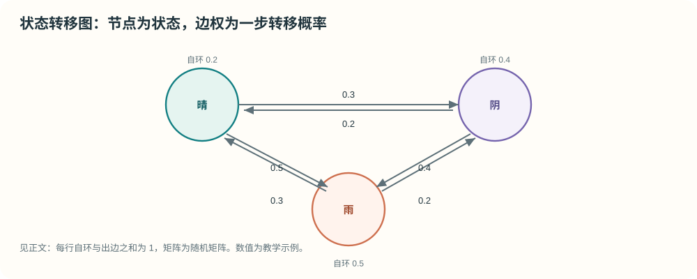
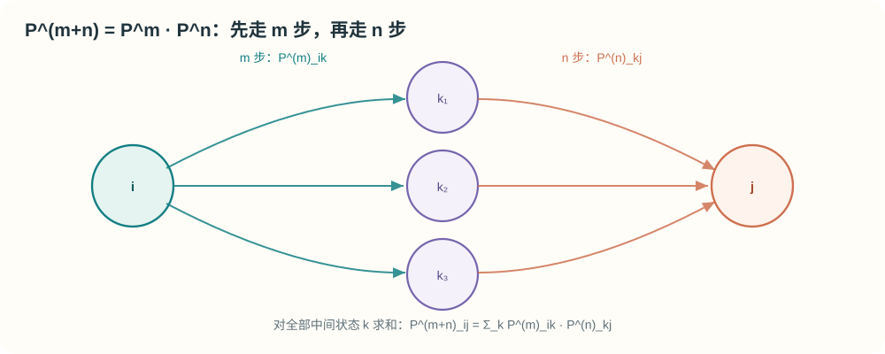
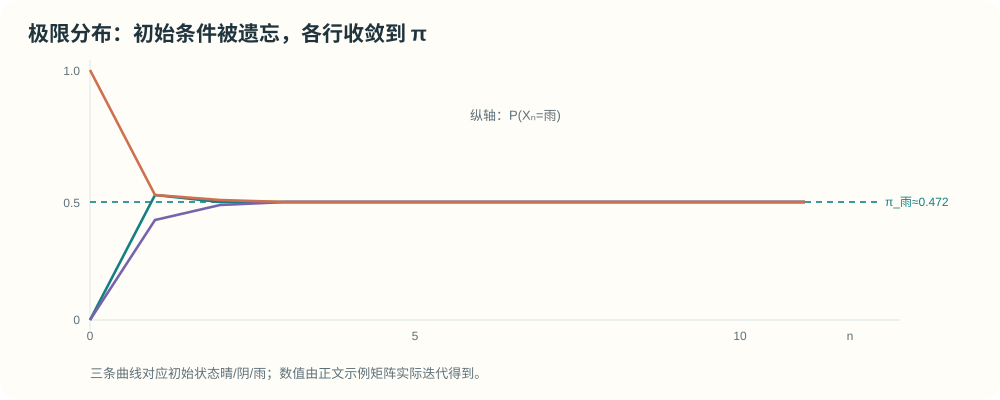
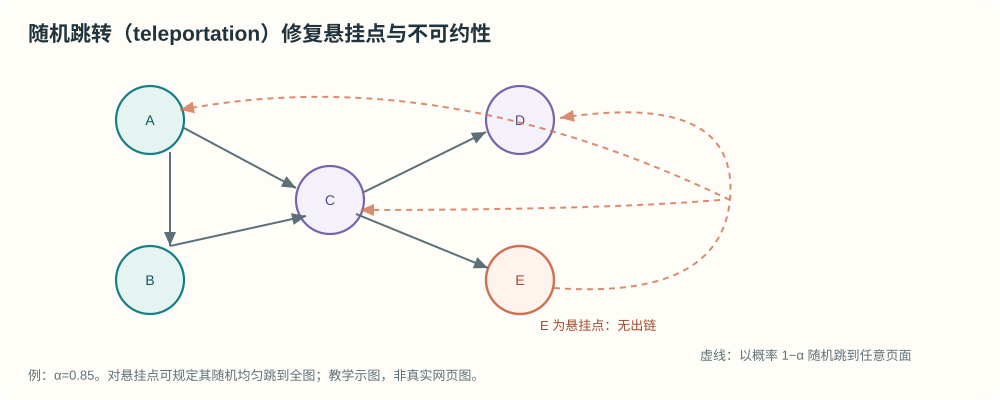

CHAPTER 18 · 系统与模型
马尔可夫链
如果“当前状态已经包含预测未来所需的全部历史”，那么整条序列只由初始分布和一个转移矩阵决定。这个假设让长程行为变得可计算：什么时候会遗忘初始条件，平稳分布何时存在且唯一。
- 陈述马尔可夫性质并用初始分布与转移矩阵写出序列概率
- 写出C-K方程，判断状态的可达、常返、周期与遍历性
- 求解平稳分布 π=πP，并说明 PageRank 如何借此排序
无后效性：马尔可夫性质
离散时间随机过程 {Xₙ, n=0,1,2,…} 满足马尔可夫性质，如果对任意状态序列，给定现在，未来与过去独立：P(Xn+1=in+1 | X₀,…,Xₙ) = P(Xn+1=in+1 | Xₙ)。
它不是说“无记忆”，而是说记忆只有一步：当前状态已经包含预测未来所需的全部历史。有了初始分布 π₀(i)=P(X₀=i) 与时齐的一步转移概率 Pij=P(Xn+1=j | Xₙ=i)，任意长度序列的概率可写成连乘：
一个具体的三状态模型（晴、阴、雨）的转移矩阵如右图：“晴→阴”0.3、“晴→雨”0.5、“晴→晴”0.2，其余两行同理，每行之和为 1。

转移矩阵与 C-K 方程
把所有一步转移概率排成 M×M 矩阵 P，它是一个随机矩阵：元素非负，且每行之和为 1。若当前分布是行向量 πₙ，则下一时刻为 πn+1=πₙP，n 步后为 πₙ=π₀Pⁿ。
切普曼-科尔莫戈罗夫（C-K）方程把多步转移按中间状态拆开：从 i 经 m+n 步到 j，等于先走 m 步到某个 k、再走 n 步到 j，对所有 k 求和：
矩阵形式就是 P(m+n)=PmPn，所以 n 步转移矩阵恰好是一步矩阵的 n 次幂。

状态分类
若存在 n≥0 使 P(n)ij>0，称 j 从 i 可达（i→j）；互相可达则互通（i↔j），互通把状态空间划为互通类。
设 fii 为从 i 出发最终返回 i 的概率：fii=1 为常返，fii<1 为暂态。常返状态下，平均返回时间有限为正常返，无限为零常返。状态周期 d=gcd{n≥1: P(n)ii>0}，d=1 为非周期。
同时满足不可约（所有状态互通）、正常返、非周期，就称为遍历链——它有唯一的平稳分布，且从任意初始分布都收敛到它。
有限状态简化：有限状态链不会出现零常返；若链不可约，所有状态性质相同（全正常返或全暂态，周期也一致）。所以只需看一个状态就能定性整条链。
平稳分布与极限分布
概率向量 π=(π₁,…,π_M) 是平稳分布，如果 π=πP，即
它的含义是分布不再随时间变化（样本路径仍在跳变）。对遍历链，无论初始分布如何，π₀Pⁿ 都收敛到唯一的 π；这也等价于 P(n)ij→πj 对任意 i 成立，即“逆忘初始条件”。收敛速度由转移矩阵第二大特征值模长决定，越接近 1 越慢。

PageRank：平稳分布的应用
把互联网看成一条马尔可夫链：页面是状态，超链接是转移。用户以均匀概率点击当前页面上的链接。该链的平稳分布就是页面被访问的长期概率，也就是页面重要性排名。
但网页图往往不可约且含悬挂点（无出链的页面）。PageRank 的修正：以概率 α（通常 0.85）沿链接跳转，以概率 1−α 随机跳到任意页面：
其中 H 是超链接转移矩阵，J 是全 1 矩阵，1/N 对应均匀随机跳转。加上随机跳转后，链变得不可约且非周期，平稳分布存在且唯一。

可复现核查
下面用图 18.1 的示例矩阵验证三件事：矩阵是随机的；幂迭代得到的 π 满足 π=πP；不同初始分布都收敛到同一 π；C-K 的矩阵乘法结合律成立。纯 Python，可重跑。
P = [[0.2, 0.3, 0.5],
[0.2, 0.4, 0.4],
[0.3, 0.2, 0.5]]
P_t = [list(r) for r in zip(*P)]
def mv(A, v):
return [sum(A[i][j] * v[j] for j in range(len(v))) for i in range(len(A))]
def mul(A, B):
return [[sum(A[i][t] * B[t][j] for t in range(len(B))) for j in range(len(B[0]))]
for i in range(len(A))]
assert all(abs(sum(r) - 1) < 1e-12 for r in P) # 随机矩阵
pi = [1 / 3, 1 / 3, 1 / 3]
for _ in range(1000):
pi = mv(P_t, pi) # pi = pi P
assert abs(sum(pi) - 1) < 1e-9
for j in range(3):
assert abs(pi[j] - sum(pi[i] * P[i][j] for i in range(3))) < 1e-12
print([round(x, 4) for x in pi]) # [0.2472, 0.2809, 0.4719]
for start in range(3): # 遗忘初始条件
v = [0, 0, 0]; v[start] = 1
for _ in range(60): v = mv(P_t, v)
assert max(abs(v[j] - pi[j]) for j in range(3)) < 1e-9
left, right = mul(mul(P, P), P), mul(P, mul(P, P)) # C-K 结合律
assert max(abs(left[i][j] - right[i][j]) for i in range(3) for j in range(3)) < 1e-12
检查点：π≈[0.2472, 0.2809, 0.4719]，三个初始状态均收敛到它，对应图 18.3 中曲线最终停在 0.472 一线。测试文件 examples/test_chapter_18.py 复用同一构造。
边界与陷阱
- 马尔可夫假设需要检验。“当前状态包含全部历史”常不成立（长期兴趣、季节性、外部因素）。可先比较一阶与高阶（或加入额外状态特征）的预测能力，再决定是否用链。
- 状态定义决定成败。状态太粗会丢失关键历史而破坏无后效性；状态太细会导致转移矩阵稀疏、难以估计。建模时要在两者间取平衡。
- 周期性会阻止收敛。周期链的 Pⁿ 会振荡而不趋于 π；平稳分布仍可能存在，但极限分布不存在（如两状态交替链）。
- 不可约性不可省。可约链（多个闭合互通类）可能有多个平稳分布，结果取决于初始状态，“唯一排名”不成立。PageRank 的随机跳转正是为修复这一点。
- 收敛速度可能很慢。第二大特征值接近 1 时，需要很多步才能接近平稳；有限步仿真不应当作已经收敛。
下一章从离散状态转向连续时间的到达过程：泊松过程与散弹噪声。
参考与核查依据
- ProbabilityCourse · Markov Chains：马尔可夫性质、转移矩阵与C-K方程。
- ProbabilityCourse · Stationary Distributions：平稳分布与极限定理。
- S. M. Ross, Introduction to Probability Models, 11th ed., Academic Press, 2014：状态分类与遍历链（第 4 章）。
- S. Brin & L. Page, “The Anatomy of a Large-Scale Hypertextual Web Search Engine,” Computer Networks, 1998：PageRank 与随机跳转模型。
- MIT OpenCourseWare · Discrete Stochastic Processes：离散时间马尔可夫链与平稳性。